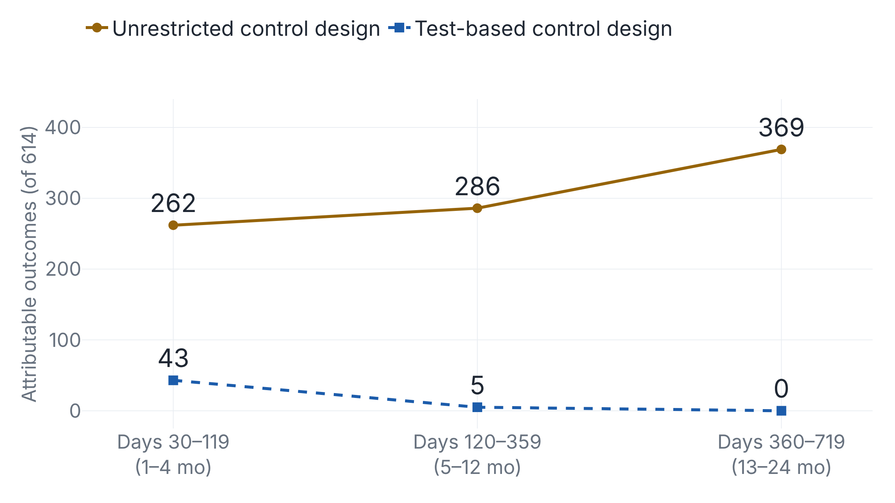

Enrolling everyone at a PCR test cuts the second-year outcomes attributed to COVID from 369 to zero
Against people never diagnosed with COVID, Stanford's analysis of US insurance claims makes a negative PCR test look nearly as harmful as infection in the first four months.
One design's long tail grows while the other's reaches zero
In PNAS on 27 October, Hamed Nilforoshan and colleagues at Stanford tested 614 outcomes for a link to COVID-19 in the insurance claims of 244.7 million US patients, running two study designs on the same records. An outcome counted as attributable at a relative risk of at least 1.1, significant after Bonferroni correction. The test-based control design found 43 such outcomes one to four months after infection, 5 at five to twelve months and none in the second year. The unrestricted control design found 262, 286 and 369.1

The unrestricted design is the authors' replica of the one used in Veterans Affairs (VA) cohort studies.1 Its cases are everyone with a COVID-19 diagnosis code, compared with people who have no such diagnosis, tested or not. The test-based design enrolls people at their first PCR test claim, and those diagnosed within 7 days are the cases. So the designs differ in their cases (10.1 million against 2.8 million) and their enrollment date as well as their comparison group.2
A negative test behaves like an exposure
COVID-19 cannot cause cerebral palsy in an adult. Yet COVID cases had a rising number of cerebral palsy claims in the months before their diagnosis, and so did people whose first PCR test came back negative, while the unrestricted comparison group stayed flat.2 A diagnosis or a test follows a visit to care, often for something else, and that visit sets the enrollment date. Nobody in the unrestricted comparison group had to make one. Before reweighting, those controls averaged 31.56 visits over four years against 54.0 for cases.2
Both designs reweight controls to match cases on four years of history. If the unrestricted design still measures contact with care, then 27.3 million people whose first PCR test was negative, and who were never diagnosed, should look about as harmed as COVID cases against its comparison group. Over days 30 to 119 they come within 0.2 percentage points.2
The unrestricted design also flagged 53.1% of 49 negative-control outcomes, conditions COVID-19 should not cause, including a 76% excess of injuries from lightning, drowning and electrocution.1
Test-negative controls pull the estimate toward the null
Ziyad Al-Aly, who led the VA studies, made the case against test-negative controls in 2023, about the Maccabi study in Israel: "When you test people, you're testing against people who are sick." Such a design, he said, "makes it look like COVID-positive people have a resolution of symptoms."3
The PNAS paper concedes the mechanism. Two of its 49 negative controls ran significantly below 1, which the authors put down to collider bias from selecting on a test that infection and other illness both prompt. Its controls also caught COVID-19 later, a second bias in the same direction.1
Any comparison group defined by a negative test carries this contamination, which pulls the difference "towards the null," as a 2026 methods review led by Daniel Ayoubkhani notes.4 The VA comparison group carries it too, from unrecorded infections.5 The test-based design also misses effects below a relative risk of 1.1, and claims miss fatigue or cognitive symptoms that never get a billing code.16 Its authors say it "may modestly underestimate some effects" and give no figure for how much.1
The VA cohorts passed the negative-control check the claims replica failed
| Study | Comparison group | Pushes estimate | Later findings |
|---|---|---|---|
| VA cohorts, 2021 and 2023 | VA users without a positive test | Up from care-seeking, per PNAS; down from missed infections; negative controls null | 24 of 77 conditions raised at two years (non-hospitalized) |
| Maccabi, BMJ 2023 | Test-negative members | Toward the null | 5 outcomes raised at days 181–360 |
| RECOVER, JAMA 2023 | Uninfected, indexed to a negative test | Not measured; volunteers tested per protocol | 37 of 44 symptoms at adjusted odds ratio ≥ 1.5 |
| PNAS replica | No COVID diagnosis, tested or not | Up; 53.1% of negative controls flagged | 369 outcomes in year two |
| PNAS test-based | First PCR test, no COVID | Toward the null; 2 of 49 negative controls below 1 | 5 at days 120–359, 0 in year two |
On these claims, the unrestricted design gives placebo cases the profile of real ones and flags 53.1% of its negative controls, so most of its 369 second-year outcomes come from the comparison group. That result belongs to the replica. It required one claim in 2019, where the VA cohorts required earlier VA visits. The VA negative controls came back null, with neoplasms and accidental injuries each at a hazard ratio of 1.03 over six months.71 Test-anchored designs still find later effects. In Maccabi, cognitive impairment had a hazard ratio of 1.69 at days 181–360.8 The test-based design's own five middle-window outcomes are myopathy, hair loss, pulmonary embolism, acute pulmonary embolism and respiratory failure.1
No researcher outside the team has commented publicly yet. CIDRAP's report quotes only the authors.10 The authors write that their study "does not indicate that symptoms beyond one year are not genuine but that their attributability to COVID-19 is uncertain."1 On this evidence, a year-two effect measured against an unrestricted comparison group needs a negative-control result beside it before anyone reads it as an effect of the virus.
Sources
- PNAS · Nilforoshan et al., Revised estimates of long COVID symptoms (2026)
- PNAS · Nilforoshan et al., SI Appendix (2026)
- CIDRAP News · Experts on the Maccabi study (2023)
- eClinicalMedicine · Ayoubkhani et al. (2026)
- Nature Medicine · Bowe, Xie, Al-Aly (2023)
- Stanford University · Long COVID study release (2026)
- Nature · Al-Aly, Xie, Bowe (2021)
- BMJ · Mizrahi et al., Maccabi cohort (2023)
- JAMA · Thaweethai et al., RECOVER adults (2023)
- CIDRAP News · Report on the Stanford study (2026)